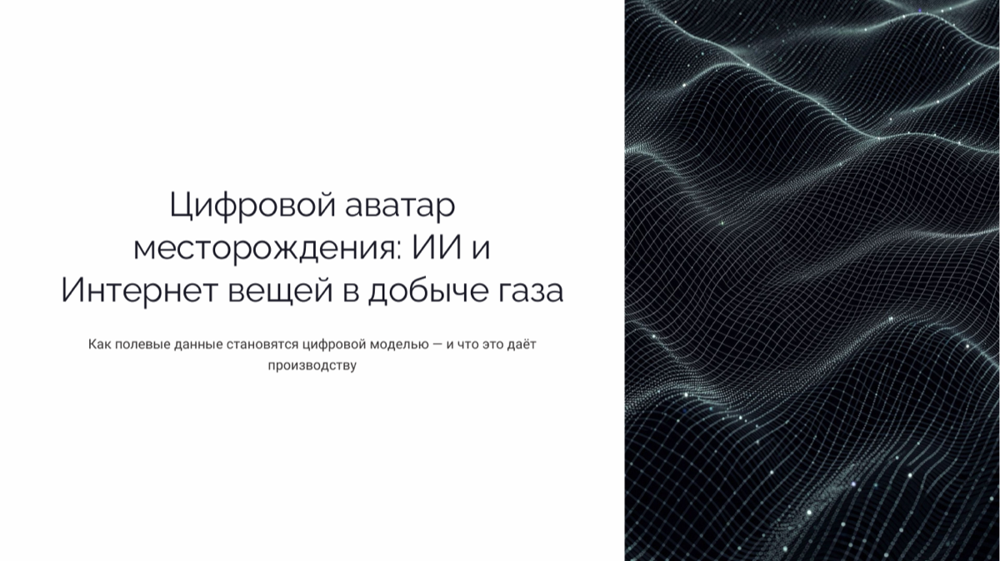
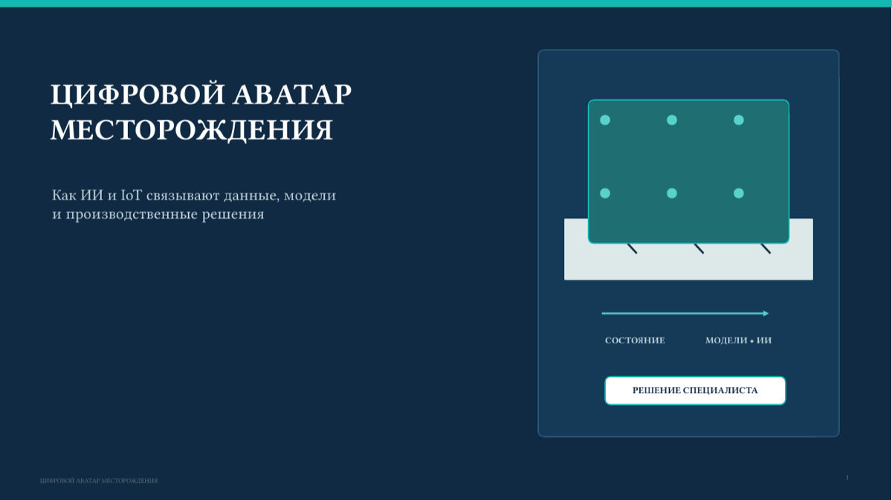

Открыть PDF ↗01CANVAS
Цифровой аватар месторождения
9 слайдов · светлая редакционная композиция · PDF-просмотр и исходный PPTX.
ОДНА ТЕМА · РАЗНЫЕ ИНСТРУМЕНТЫ
Сравните, как разные ИИ-инструменты визуализируют одну тему: «Цифровой аватар месторождения: ИИ и Интернет вещей в добыче газа».

Открыть PDF ↗9 слайдов · светлая редакционная композиция · PDF-просмотр и исходный PPTX.

Открыть PDF ↗8 слайдов · корпоративная схема · PDF-просмотр и исходный PPTX.